monographer: Kuei-Yu Tsai
thesis advisor: Professor Tzu-Chieh Tsai
為了能輕鬆地學習彈奏鋼琴，首先要確定坐的位置及彈琴的正確姿勢，養成良好的彈奏習慣。
坐的位置與姿勢：把椅子放在琴鍵前正中，身體面對琴鍵中央，端正而舒適的坐下，挺直背脊。
椅子的高度：把手放在琴鍵上，肩臂及手肘放鬆，兩肘與鍵面平行或略高於鍵盤為宜。
身體與鋼琴的距離：把雙手自然向前伸出與肩平，雙手手指相接，擺成一個橢圓，然後保持這個姿勢，把手向下落在鋼琴琴鍵上，如果剛好落在白鍵上（未碰觸到黑鍵），即為最合適的距離。
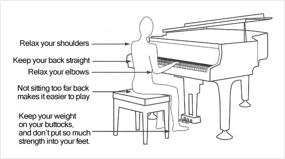將五條橫線並排起來，並在開頭畫上高音譜記號，就叫做高音譜表。鋼琴鍵盤中央右邊的音，一般都記在高音譜表上。
而譜上的黑色即為音符，他們在五線譜上由下往上逐漸升高。
此電腦前的鍵盤中央音預設為C4，也可透過左上方OCTAVE鍵來改變八度音高。
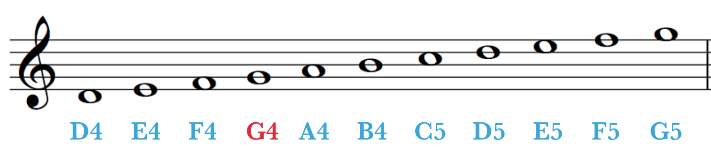Hint: start from C4!
在五線的開頭畫上低音譜記號，就稱為低音譜表，而低音譜表適用於記錄鋼琴鍵盤中央以左的音。
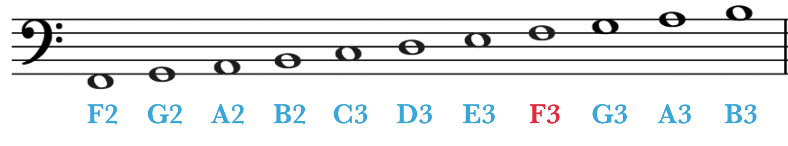可以發現，高音譜表下加一線的C音，和低音譜表上加一線的C音，是為同樣的音，在鋼琴鍵上稱為中央C音（C4）。
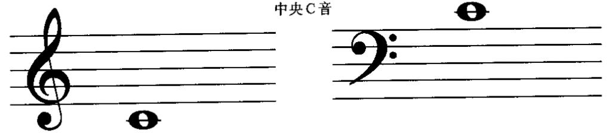因為低音譜位於中央C音的左邊，通常碰見低音譜上的音是用左手來演奏。現在，先簡單介紹指法與低音譜上的音。
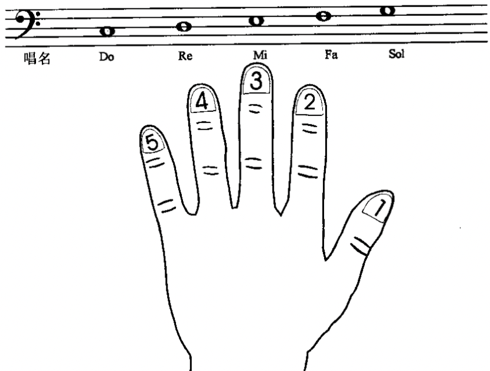Hint: Bass Clef Notation (Left-Handed)!
於此樂譜上，黑色圓圈加上一豎線，就叫做四分音符，表示一拍的長度。而白色圓圈加上一豎線，即為二分音符，而二分音符的長度，等於兩個四分音符，也為兩拍的長度。而最後，白色圓圈為全音符，代表兩個二分音符、四個四分音符，也為四拍長度的音符。
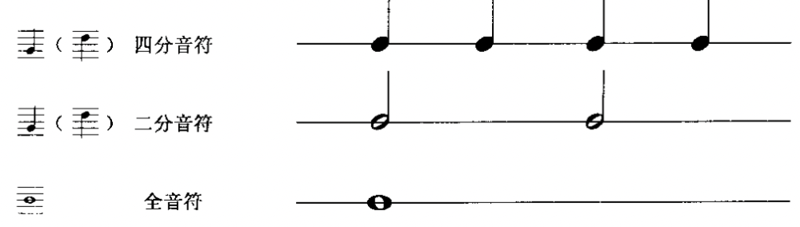於此樂譜前面所記的44符號，即稱為44拍，意思是以四分音符算一拍的四拍子樂曲，而此符號也可用C來表示。
雖然在拍子記號中，已經可以知道這首為幾拍子的樂曲，但隨著樂曲進行，卻也容易混淆拍子。所以以44拍為例，將4個四分音符分成一組後畫上一條直線，此線即稱為小節線，線和線之間，即稱為小節，而樂曲最後的雙線，即為終止記號，表示樂曲已經結束了。
Hint: Hänschen Klein of major C!
樂譜上如果記有反覆記號時，要從這記號的地方，再回到上一個反向的記號（或是開頭）再彈奏一次。
以下列簡單例子為例：
Hint: start from C5 (OCTAVE to move)!
D.S.(Dal Sango)
前面我們已經學過音符，而另外還有一些表示不彈奏，讓音樂暫時停止的符號，稱作休止符。以下是休止符與音符節拍的對照：
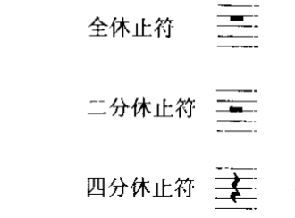 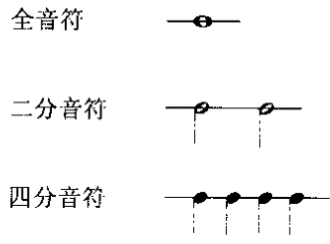把長短不同的音符和休止符巧妙地組合起來，就稱為節奏。現在可以依照下列的節奏練習：左右手置於膝蓋上，照著上面的音符拍子輕輕敲打。而左手最好能將一拍子強、二拍子弱、三拍子次牆及四拍子弱分別的明顯一點。
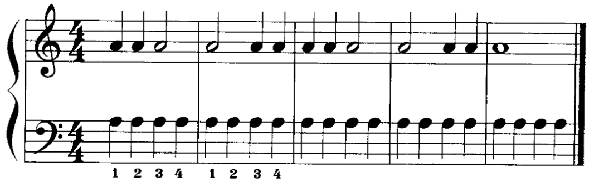Hint: mind the Crotchet rest (Left-Handed)!
帶有圓滑線的音需彈得連貫，其方法為：已經按在琴鍵上的手指，要在下個手指彈下去時才抬起來。一般來說帶有圓滑線的音都應該採用這種彈法，但如果遇到同一手指需兩次或多次彈擊同一琴鍵時，每次都需把手抬起再彈。
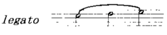簡單介紹下譜中左邊為原先主題，而右邊則為相同架構下的簡單變奏，而後方練習也為同一主題之變奏，可以練習看看。
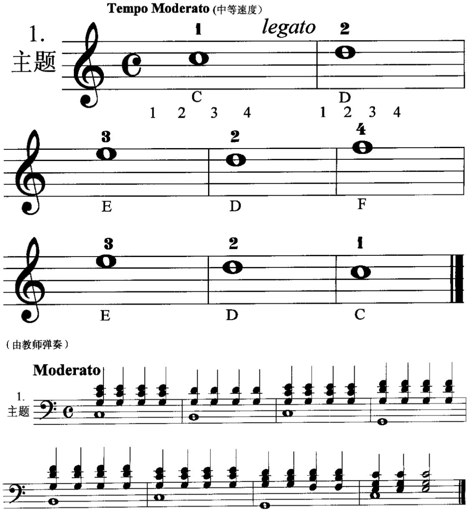 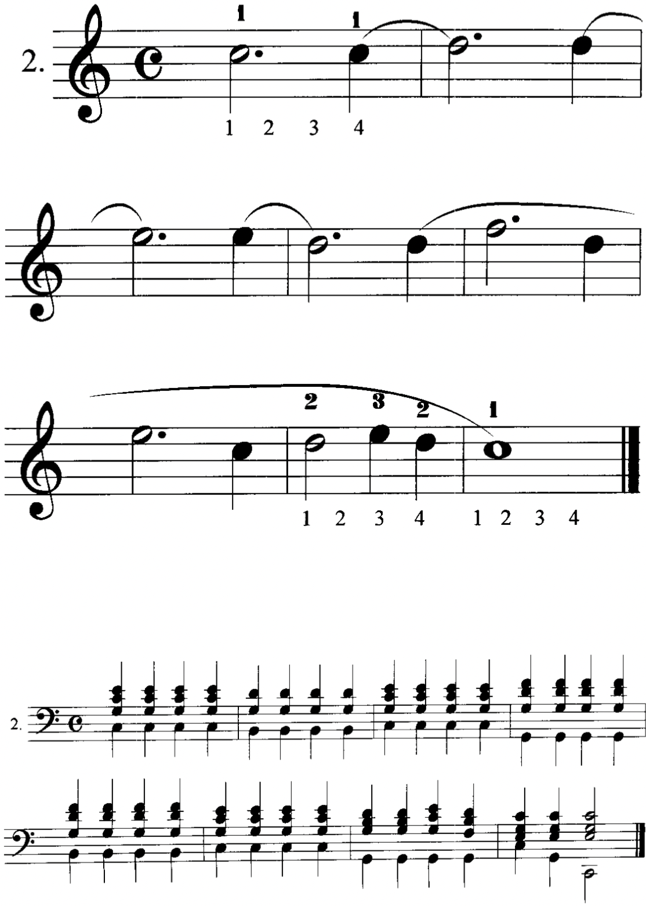Hint: start from C5 (OCTAVE to move)!
mind the Legato
左右手分別為左右2圖，指法除了按照手指位置安排之外也須依照譜的跨度來決定。
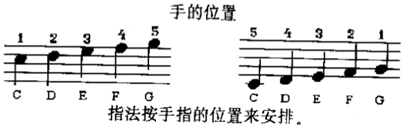開始雙手練習前，請記住，彈好鋼琴的基本要求是：保持身體、手臂、手與手指的良好姿勢，加上良好的指法與嚴格、準確的節拍。如果現在不能保持正確的姿勢，以後將會很難改正過來。
以下為雙手練習的範例，因為此系統之鋼琴鍵盤配置為25鍵並且鍵盤規模較一般鋼琴來小，所以此處僅提供練習範例及教學建議。
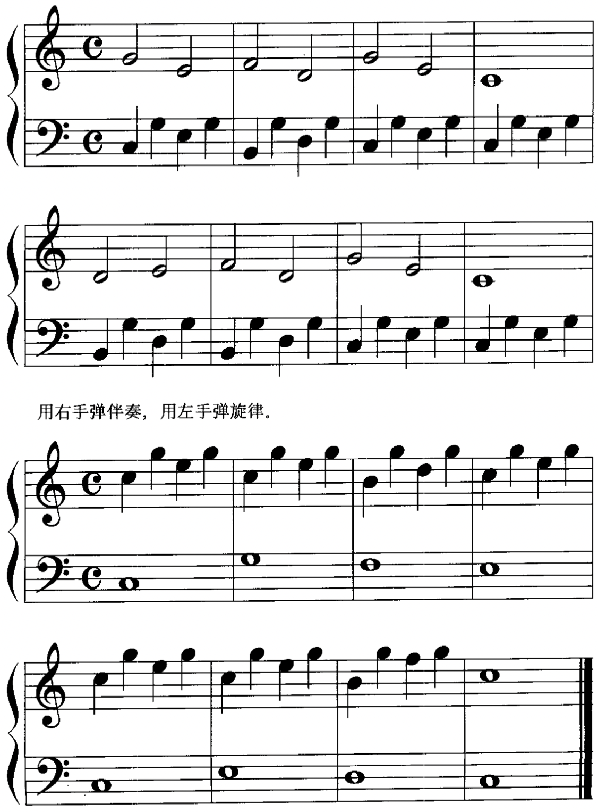Hint: start from C5 (OCTAVE to move)!
mind the Time Signature
在《拜爾》第18曲中，左手出現了和音。在下面的補充練習中，要求把兩個音同時彈出，音量要相同，發音要明亮。
以左手練習，數四拍：
Hint: major C chord (Left-Handed)!
Congrats!
You have passed the previous simple classes!
It's the time to check that how much you get!
You passed the course!
Press any note to see the result!